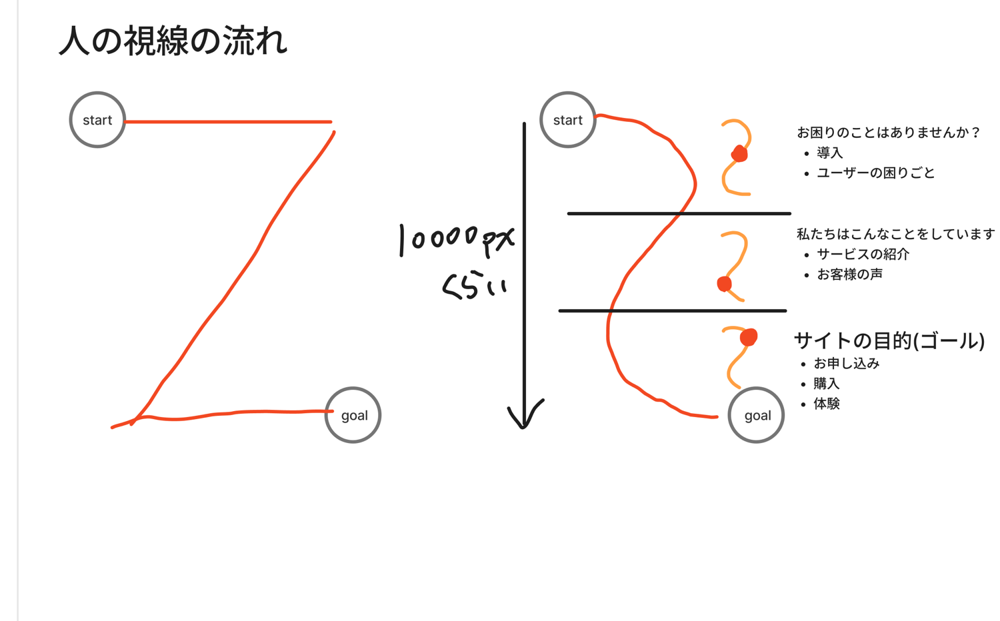
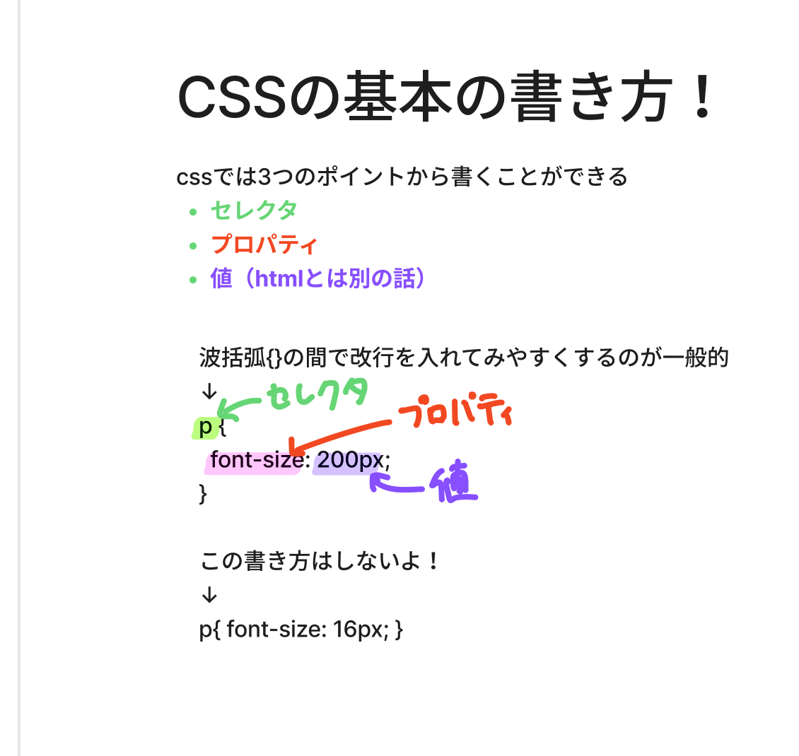

訓練校｜全6時間の集中授業
訓練の初日まわり。テーマは 「サイトを作る前の考え方」 と 「CSSの基本の書き方」。
かんたんに言うと 「いきなり作らず、まず設計図（ワイヤーフレーム）を描く」「人の目は Z や F の形に動くから、それに合わせて情報を置く」という話。後半は CSS の3点セット（セレクタ・プロパティ・値）を習いました。
授業の流れを時間順に。行をクリックするとその説明へジャンプ。★が多いほど大事。
| 時刻 | 内容 | 大事さ |
|---|---|---|
| 00:05 | 演習：喫茶つづるのサイトマップを考える | ★★★ |
| 00:14 | 最低5ページ・2種類のユーザー両方が迷わない構成 | ★★★ |
| 00:45 | 欠席・遅刻・早退の連絡フロー | ★★★ |
| 00:53 | 休憩 | — |
| 01:03 | サイト制作のワークフロー（教科書13p） | ★★★ |
| 01:10 | ワイヤーフレームとは（設計図） | ★★★ |
| 01:25 | 価格感（訓練校で250万 vs 150万） | ★ |
| 01:48 | 休憩 | — |
| 02:08 | 印象×機能＝ウェブデザイン（教科書10p） | ★★★ |
| 02:25 | 人の視線の流れ（Z型・F型） | ★★★ |
| 02:30 | ウェブデザイナーの本質（2つのわがまま） | ★★★ |
| 02:37 | 紙デザイン vs ウェブデザイン | ★★★ |
| 02:52 | CSSの基本の書き方（セレクタ・プロパティ・値） | ★★★ |
| 02:56 | クラスとIDの違い | ★★★ |
| 03:00 | 休憩・演習タイム | — |
| 04:00 | CSSセレクターの種類の続き | ★★ |
| 04:30 | 演習：喫茶つづるの続き＋質疑応答 | ★★ |
| 05:00 | 授業終了 | — |
架空のカフェ 「喫茶つづる」（オーナー自家焙煎コーヒー＋厳選した本が買える店）のサイトの設計図（サイトマップ）を考える演習です。「どんなページを作る？」「各ページに何を載せる？」を紙でもFigmaでもOKで考えます。
トップ／アバウト（オーナー紹介）／コーヒー紹介／本（ブックス）／読書探訪イベント／アクセス／お問い合わせ … など。
詰まったら似た喫茶店・本屋のサイトを5つ見て、いい所を真似るのがコツ（A先生談）。
学校生活の大事な手続き。これを怠ると給付金が遅れます。
教科書13p。これが仕事の全体地図です。
| 工程 | 内容 | 担当 |
|---|---|---|
| 1 | 受注（依頼が来る） | ディレクター |
| 2 | ヒアリング（目的・納期・予算・誰向けかを聞く） | ディレクター |
| 3 | 調査分析（競合サイト調べ、アクセス解析） | ディレクター |
| 4 | サイト設計・サイトマップ | ディレクター |
| 5 | ワイヤーフレーム（設計図） | ディレクター |
| 6 | デザイン（Figmaなどで見本作り） | ウェブデザイナー |
| 7 | コーディング（HTML/CSS実装） | コーダー |
| 8〜10 | テスト → 公開 → 運用 | コーダー/全員 |
クライアントが目指すゴールをヒアリングでしっかり汲み取り、公開後の運用まで考えて設計すること。サイトは作って終わりじゃなく運用が本番。
参考：訓練校規模のサイト外注で約250万円、自社制作なら約150万円。「ミニマムスタート」で予算に合わせて削るのも現場のあるある。
ワイヤーフレーム＝「ウェブサイトの設計図」。
家を建てる前に間取り図を描くのと同じ。「どこに何を置くか」を先に決める下書きです。色やデザインはまだ付けず、配置だけ。手書きでもFigmaでもOK。
「リンクどこ置く？」「上から下に何を書く？」「色は決まったけどどう使う？」… 設計図が無いと質問だらけで進みません。先に設計図 → 迷いが消える。
先生の板書（黄色ハイライト）でも「Webサイトの設計図 マジ重要」と強調されていました。
デザインとは単にどう見えるか・どう感じるかではない。どう機能するかだ。 — スティーブ・ジョブズ
ウェブデザインは「印象（見たくなる・使いたくなる）」×「機能（分かりやすく伝える）」のかけ算。
かっこいいだけでもダメ、使いやすいだけでもダメ。両方そろって初めてウェブデザインです。
トレンドより見やすさ・使いやすさ・問題解決が大事。流行りものが正義ではない。
人がサイトを見るとき、目はアルファベットの Z や F の形に動きます。
この動きに合わせて大事な情報を置くと、自然に伝わるのです。
下の図が先生の手書き板書です。左＝Z型（start から Z を描くように右上→左下→右下）、右＝F型（縦長サイトを上から、各ブロックで左→右）。右の図では 導入 → 紹介・お客様の声 → サイトの目的（ゴール＝お申し込み・購入・体験）と、下に行くほど「申し込みへ誘導」する流れが描かれています。

| 項目 | 紙 | ウェブ |
|---|---|---|
| サイズ | A4/B5など固定 | デバイスごとに変わる |
| 色 | CMYK（印刷） | RGB（16進数 #ff0000） |
| 単位 | ミリ・ポイント | px / rem / em |
| 修正 | 納品後は不可 | 公開後も直せる |
ウェブデザイナーはPC・スマホ・タブレット・大小モニター全部を考える必要あり。初心者あるある＝PCで気合い入れたらスマホで崩れる。
クライアントのわがままとユーザーのわがままのバランスを取る仕事。 — A先生
クライアント（お店）は「言いたいこと」を発信したい。ユーザーは「知りたいこと」だけ見たい。
この2つはたいてい食い違う。そのズレを埋めて両方を満たすのがプロの腕の見せどころです。
「みんなに買ってほしい商品は、みんな買わない。分かりづらいから」— ターゲットを絞ることの大切さ。
CSSは「どこを（セレクタ）」「何を（プロパティ）」「どうする（値）」の3つでできています。この形以外には絶対なりません。
セレクタ { プロパティ: 値; }
下の図が先生の手書き板書。p { font-size: 200px; } というコードに、「←セレクタ」「プロパティ」「値」と矢印で注釈。「p{ font-size:16px; } のように1行で書くのはしないよ」とも。

| 要素 | 意味 | 例 |
|---|---|---|
| セレクタ | HTMLの「どこに」効かせるか | p / .classname |
| プロパティ | 「何を」変えるか | font-size / color |
| 値 | 「どう」するか | 200px / #ff0000 |
{ }:;「あだ名はクラスが基本、特殊な用途のときだけID」。スマホでボタンを押すとシュッと下にスクロールする、あれを作るのがID。
| 用語 | 意味 |
|---|---|
| ワイヤーフレーム | ウェブサイトの設計図（配置の下書き） |
| サイトマップ | どのページがあるかの一覧図 |
| ワークフロー | 受注→ヒアリング→…→運用の仕事の流れ |
| ヒアリング | クライアントに目的・予算などを聞くこと |
| Z型・F型視線 | 人の目が動くパターン |
| ファーストビュー | サイトを開いて最初に見える画面 |
| 印象×機能 | ウェブデザインの公式 |
| CMYK / RGB | 紙の色 / Webの色 |
| セレクタ | CSSを「どこに」効かせるかの指定 |
| プロパティ | 「何を」変えるか（color等） |
| 値 | 「どう」するか（16px等） |
| クラス / ID | 要素に付けるあだ名（IDは1回のみ） |
{ } : ; を忘れないかっこいい雰囲気を勝手に出すんじゃなくて、使い手の目線でサイトの目的が達成できるよう手助けするのがウェブデザインの大事なところ。
クライアントは自己発信したい、ユーザーは欲しい情報が知りたい。そのズレを埋めるのがウェブデザイナーの本当のスキル。
みんなに買ってほしい商品は、みんな買わない。分かりづらいから。
最初からユニークやオリジナルを目指すと激ムズ。まずは模写しろ。
自分でやるからいいやってなると、爪が甘くなる。違う人が見る前提で作れ。